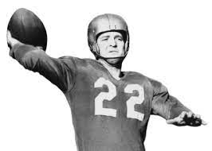
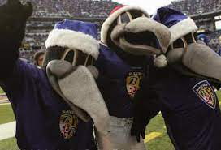
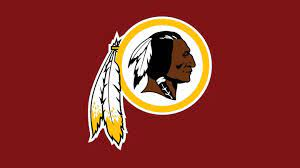

"Historias ineditas"
Aqui hablaremos sobre historias que pasan los subrrealista o que al momento de escucharlas no te las crees
El dedo de "Ronnie lott"

En esta primera historia hablaremos sobre un jugador que se amputo la punta de el dedo para no perderce un partido
era el año de 1986 ultima semana de la temporada regular jugaban los 49ers vs los dallas cowboys el jugador "Ronnie lott"
intento hacer una tacleada paro su dedo se quedo atrapado en la mascara de el jugador y... su menique quedo estruido los medicos le dijieron que
nesesitaria cirugia o amputarcelo que hizo el gran ronnie lott pues decidio amputarce la punta de el menique para una semana despues volver a jugador
en una entrevista el dij que se arrepiente de amputarce el dedo.
"La maldicion de madden"

La siguiente mas que una historia inedita lo consideran una maldicion, pues digamos que como todo deporte tienen un juego llamado
madden que tiene de malo diran pues... jugador que aparece en la portada o se lesiona, o tiene una temporada terrible, les dare unos ejemplos en el año 2008 vince youg QB fue portada de el madden 08 que fue lo que le paso pues en el primer juego de temporada se lesiono y no volvio a jugar hasta el año 2009
en el primer partido cuando volvio pues se ¡lesiono otra vez! pero la maldicion tambien a ayudado a jugadores por ejemplo "patrick mahomes"salio de portada en madden 20 y en ese año gano el "MVP" de la liga y el super bowl 54.
"Daria todo mi draft por el"

Era el año de "1999" y llegaba la epoca de el draft que su objetivo es que los equipos traigan a las futuras estrellas de el deporte siguiendo con la historia los "Saints de new orleas" buscaban a toda costa un corredor y el mejor RB de esa generacion era "Ricky williams"
jugador de la universidad de texas el caso es que el head coach de ese entonces mike ditka dijo en una conferencia que daria sus 8 selecciones de draft por ricky williams el caso es que el equipo se dio cuenta que ricky no estaria disponible en el pick que le correspondia, asi que lo que hiciero darle
sus 8 picks a los entonces "washinton redskins " solo para subir al 3er pick global y diran pues fue un ganar para los dos equipos, pues... washinton no hizo nada con esos 8 picks ya que los intercambio a distintos equipos y ricky williams solo paso 3 años en los saints para despues migrar a los miami dolphins.
"Equipos invictos"
En toda la historia de la nfl solo 2 equipos han quedado invictos en temporada regular y son los miami dolphins de año 1972 con 14-0 y los patriotas de new england en el año de 2007 con 18-0, pero tambien hay dos
equipos con racha invicta pero de derrotas y son los lions de detroit de el año 2008 con 0-16 y los cleaveland browns de el año 2017 con 0-16.
"La maldicion de boby lane"

"Boby lane" fue el "QB" de los detroit lions en lo años 50s el caso es que lane se lesiono en la temporada de "1957" y los lins decidieron mandarlo a los steelers devidio a que ellos decian que ya no les servia,el caso es que cando susedio eso
"lane" decidio maldecirlos diciendo que no ganarian nada en 50 años y dicho los lions no ganaron nada en 50 años y despues de que se tenia que acabar la maldicion en 2008 los lions perdieron todos sus juegos lo que les dio el pick n°1 de el draft de el 2009 y escogieron al "QB" "Mathew stafford" el cual vivio en la misma ciudad ademas en la misma calle
y para terminar estudio en la misma preparatoria sin duda una maldicion verdadera.
"Aaron hernandez??"

"Aaron hernandez" fue... ahhh fue un jugador que jugaba en la posicion de "TE" era parte de el equipo de los new england patriots, a el se le consideraba un buen prospecto a futuro
muchos decian que seria un futuro salon de la fama pero... lastimosamente el 26 de julio de el 2013 el departamento policial de "massachusetts" arresto a hernandez devido a que se le acuso de
asesinar a una persona llamada "Odin lloyd" el cual era novio de su hermana, ademas de ser acusado de cargos menores que al final se le declararia inocente se esos cargos,
dos años despues lo centenciarian a cadena perpetua en "2015" mientras cumplia su cadena perpetua en la madrugada de el "19/04/17" los guardias lo encontraron colgado de su celda, tiempo despues su familia accedio a que revisaran el cerebro de aaron
y lo que les dijieron fue lo siguiente "Aaron hernandez sufria de CTE " o encefalopatia traumatica cronica esta fue causado devido a los constantes golpes a la cabeza que resivia esto provoco conportamientos muy irregulares que llevaron a aaron a hacer lo que hizo
de hecho de el caso de aaron se hizo una pelicula sobre el "CTE" y la nfl decidio prohibir los golpes a la cabeza ademas de mejorar los cascos, lastimosamente todo eso se hizo despues de una tragica historia. Descance en paz "Aaron hernandez (1989-2017) "
"Pagame por el logo"

En el año de "1996" hbo una expancion de equipos en la nfl en la cual se unieron los baltimore ravens, el caso es que por falta de tiempo un aficionado les mando un logo el cual le gusto a la franquicia y lo usaron Por
3 temporadas hasta "1998" y esto se deve que la persona que les mando el logo queria jerseys firmados por jugadores de el equipo, los ravens no accedieron a eso y para evitar un demanda cambiaron su logo.
"Edgar, alan y pou"

Esto mas que ua historia es una curiosidad los muchos equipos tienen mascotas y el equipo de los baltimore ravens tenian a 3 botargas de cuervos
y estos eran "Edgar, alan y pou" y diran por que se llaman asi pues... es un homenaje al escritor "Edgar alan pou" el cual nacio en baltimore "meriland".
"De redskins a comanders"

En la actualidad hay un equipo llamado los washinton commanders, pero anteriormente se llamaba de una forma diferente
y esta era los "washinton redskins" y diran por que se cambio en nombre pues... devido al postmodernismo fue cambiado el nombre ya que la gente
consideraba que el nombre era muy racista ya que "redskins" reprecenta a los pieles rojas o a los indios americanos asi que por la presion social la franquicia tuvo que retirar
el nombre y el logo antiguo para despues llamarce los washinton commanders. "Maldito postmodernismo arruinas todo"
"O.j simpson"

Antes de empesar esta es la ultima historia asi que desues de esto empecemos "oj simpson" es sin duda el mejor jugador de los bufalo bils pero no estaria hablando de el d no ser por lo que hizo
"oj" asesino a su esposa y a su mejor amigo devido a que el pensaba que su esposa le estaba siendo infiel asi que oj decidio tomar esa mala desicion de hehco lgo subrrealista fue que a oj lo querian detener por que estaba hullendo
pero no conucia de una forma temeraria no no conducia a una velocidad prudente y detras de el ivan al rededor de 10 coches policiales, en el jucio se le declaro inocente al dedir que no habia prubas suficientes para declararlo culpabre,
aunque años despues se le encontraria culpable de otros cargos de hecho hoy en dia creo que oj sigue en la carcel, es lamentable saber que el mejor jugador de la historia de un equipo fuese un asesino.